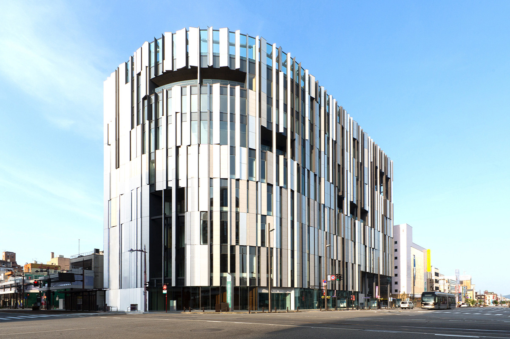
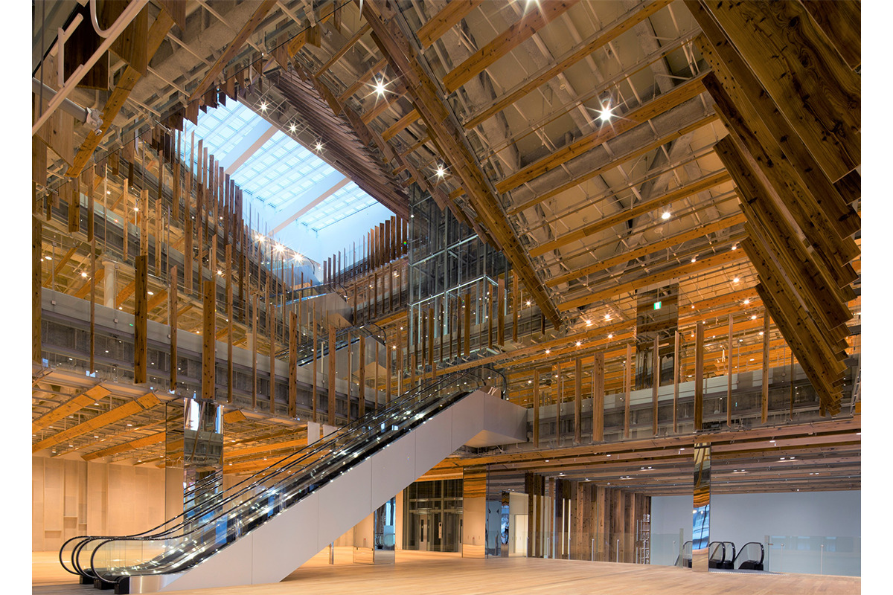
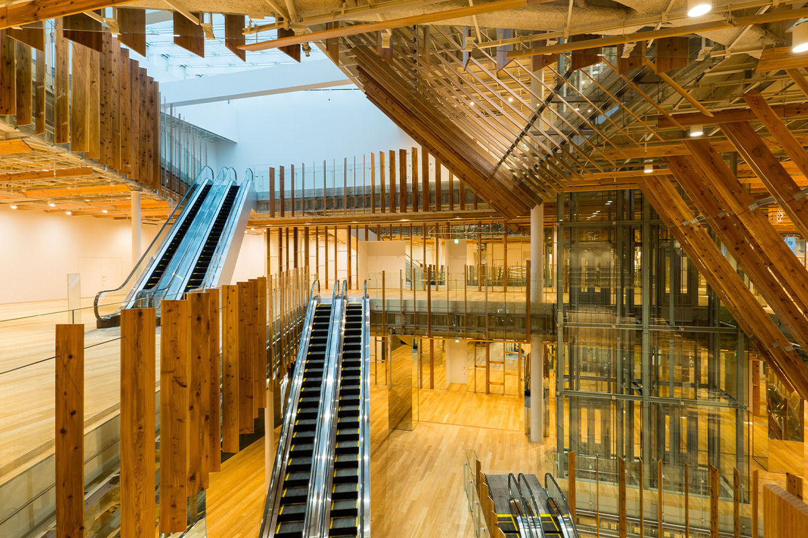
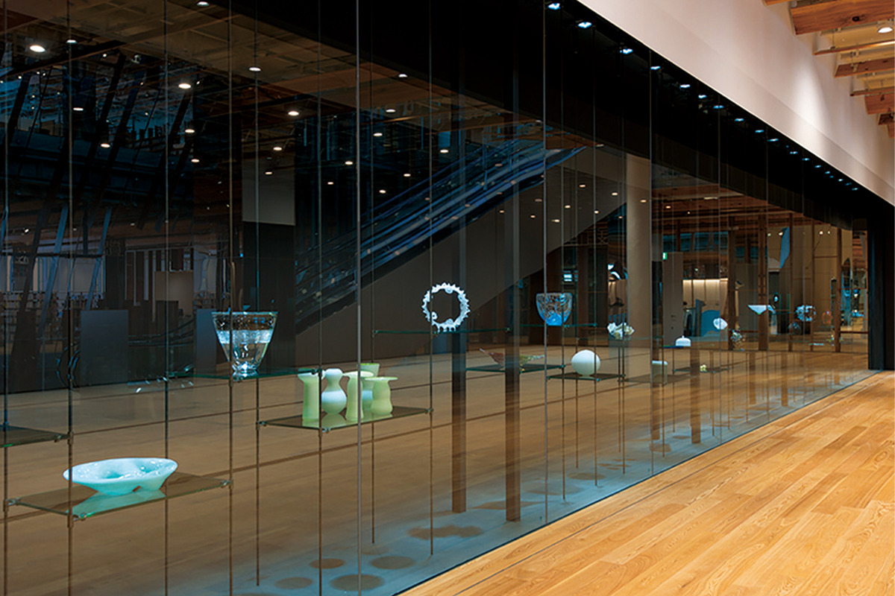
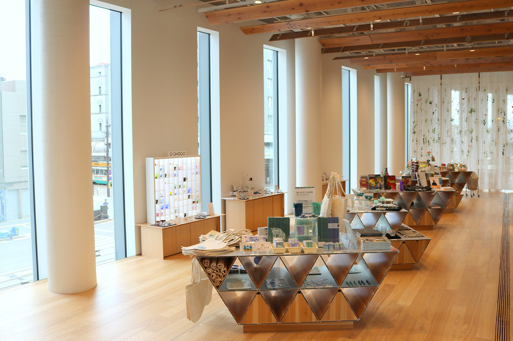

Префектура Тояма · Тояма · искусство
Toyama Glass Art Museum: стекло Дейла Чихули в здании Кэнго Кумы

В центре Тоямы стоит здание, фасад которого напоминает склоны горного хребта Татэяма. Внутри городской музей стекла: сюда едут ради работ мастеров современной стеклянной пластики и ради самого здания, которое спроектировал Кэнго Кума.
История
Город стекла, выросший из аптечки
Toyama Glass Art Museum открылся в 2015 году как часть большого замысла: сделать из Тоямы «город стекла». Музей показывает, на что способно стекло как материал для искусства, и знакомит с самыми разными его гранями. Здание проектировал архитектор с мировым именем Кэнго Кума, и в нём щедро использованы местное дерево и стекло.
Начинается эта история с лекарств. Тоямская торговля лекарствами ведёт свою традицию больше 300 лет. С 1868 по 1926 год рядом с ним выросли смежные производства, и прежде всего выпуск стеклянных аптечных пузырьков. По доле в выпуске Тояма занимала первое место в стране. До Второй мировой войны вокруг станции Тояма работало больше десяти стекольных заводов с собственными плавильными печами, и стекло было одной из опор экономики префектуры.
Помня об этом, город в 1985 году начал строить образ «города стекла». Около 30 лет работы над образом «города стекла» завершились открытием музея в 2015 году.
Архитектура
Здание как горный склон
Музей занимает часть многофункционального комплекса TOYAMA Kirari, и проект всего здания принадлежит Кэнго Куме. Фасад собран из тысячи панелей разных материалов: алюминия, стекла, белого гранита. Вместе они изображают склоны хребта Татэяма и меняют блеск в зависимости от погоды и от того, откуда смотреть. Здание само выглядит как произведение искусства.

Внутри со второго по шестой этаж идёт наклонный атриум, устроенный так, чтобы пропускать как можно больше естественного света. Стены и перегородки отделаны ламелями из криптомерии, выросшей в префектуре Тояма. Дизайн смелый, но от дерева в здании тепло.
Стоит обратить внимание и на материалы. Алюминий и стекло выбраны не только ради красоты: это главные отрасли местной промышленности, и через них здание рассказывает о самой Тояме.

Коллекция
От местных мастеров до Дейла Чихули
На четвёртом этаже показывают собрание музея. На третьем в центре внимания выразительное современное стекло, а рядом с ним и другие виды искусства. Кроме того, на стенах выставочных залов со второго по четвёртый этаж и в библиотеке, которая тоже находится в TOYAMA Kirari, выставлено около 50 работ художников по стеклу, связанных с Тоямой.

Главное собрание ждёт на шестом этаже. В постоянной экспозиции Glass Art Garden показаны пять инсталляций Дейла Чихули, мастера современной стеклянной пластики. В работе «Toyama Persian Ceiling» весь потолок выложен разноцветными стеклянными деталями, и кажется, будто смотришь вверх со дна моря. Рядом «Toyama Reeds», похожие на заросли растений, и «Toyama Mille Fiori»: в переводе с итальянского это значит «тысяча цветов».
Магазин
Стекло, которое можно увезти

В музейном магазине на втором этаже продают стеклянную посуду, украшения и другие вещи, какие можно найти только в «городе стекла». Здесь же выставлены работы художников по стеклу, которые живут в Тояме.
На втором этаже есть и кафе, где можно отдохнуть после музея или почитать книгу из библиотеки. Краски и хрупкость стекла в Toyama Glass Art Museum лучше всего разглядывать не спеша.
Toyama Glass Art Museum
- Адрес
- префектура Тояма, Тояма, Ниситё, 5-1
- Телефон
- +81 76-461-3100
- Часы работы
- 9:30–18:00, в пятницу и субботу до 20:00, вход за 30 минут до закрытия
- Выходные
- первая и третья среда месяца, новогодние праздники (бывают изменения)